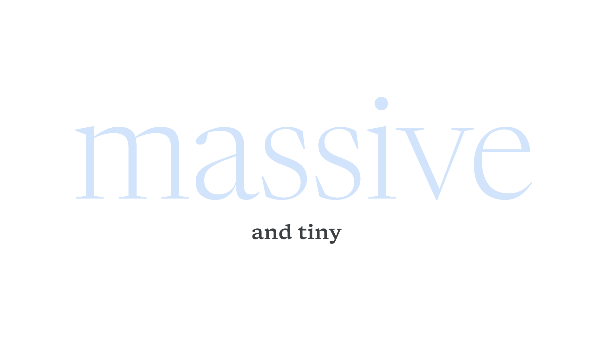

Body
By Google Fonts Knowledge contributors · Google Fonts Knowledge.
Original article · Source on GitHub · CC BY-SA 4.0. Text, illustrations and existing credits reproduced from the licensed Knowledge repository. Open Shelf adapted the layout and links; these adaptations are also CC BY-SA 4.0. No endorsement implied.
Body refers to either the main text in a piece of content—i.e., a “body of work”—or the “body” optical size (which serves as the opposite of “display”).

Whether text is set in an actual “body” optical size or not (as optical sizes are not present in the vast majority of fonts), the body is usually the portion of the overall content that requires traits often found in that optical size: a focus on legibility, a low stroke contrast, a high x-height, and a font size of around 8 to 18 points/pixels.